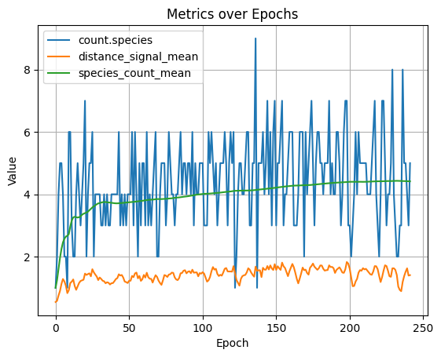

Expressions
 Under Construction
Under Construction
As of 04/25/2026: These docs are a work in progress and may not be complete or fully accurate. Please check back later for updates. This feature is currently in active development and subject to change.
Radiate includes a composable expression system that lets you query and transform the engine's metric state at runtime. Expressions are stateful, lazily-evaluated trees — each call to .apply() or an internal engine dispatch consumes one "tick" of any stateful nodes (rolling windows, schedules, etc.). This system was designed to be extremely similar to polars' expression API to leverage the same mental model of lazy evaluation and chaining, but adapted to radiate's needs.
Expressions are used in three places within the engine:
- Termination conditions — stop evolution when an expression evaluates to
true - Derived metrics — register expressions that run every generation and write their output back into the
MetricSet - Dynamic rates — drive alterer rates from metric values rather than a fixed schedule
Building Expressions
The expression DSL is available directly from the radiate package:
The expr module provides the building-block constructors:
Aggregations
Expressions can aggregate over accumulated history using a rolling window or directly over a collection.
import radiate as rd
score = rd.metric("scores.best")
score.last() # last recorded value (default)
score.mean() # running mean of all values seen
score.stddev() # standard deviation
score.min() # running minimum
score.max() # running maximum
score.sum() # running sum
score.var() # variance
score.skew() # skewness
score.count() # number of values seen
score.slope() # linear slope over accumulated values
score.unique() # deduplicated collection
# Rolling window: aggregate over the last N values only
score.rolling(50).mean() # mean of the last 50 values
score.rolling(50).stddev() # std dev of the last 50
score.rolling(100).slope() # slope over a 100-generation window
use radiate::expr;
let score = expr::select("scores.best");
score.clone().last() // last recorded value (default)
score.clone().mean() // running mean
score.clone().stddev() // standard deviation
score.clone().min() // running minimum
score.clone().max() // running maximum
score.clone().sum() // running sum
score.clone().var() // variance
score.clone().skew() // skewness
score.clone().count() // number of values seen
score.clone().slope() // linear slope over all accumulated values
score.clone().unique() // deduplicated collection
// Rolling window: aggregate over the last N values only
score.clone().rolling(50).mean()
score.clone().rolling(100).slope()
Comparisons and Logic
Expressions support standard comparison and boolean operators. These always produce a Bool result.
Python operator overloads are supported, so you can write expressions naturally:
import radiate as rd
score = rd.metric("scores.best")
# Comparisons — Python operators work directly
score < 0.01
score <= 0.01
score > 0.99
score >= 0.99
score == 0.5
score != 0.5
# Boolean logic
(score < 0.01) & (rd.metric("index") > 50) # and
(score < 0.01) | (rd.metric("time") > 10.0) # or
~(score < 0.01) # not
# Convenience: between (inclusive)
# equivalent to (score >= 0.0) & (score <= 1.0)
(score >= 0.0) & (score <= 1.0)
use radiate::expr;
let score = expr::select("scores.best");
let index = expr::select("index");
score.clone().lt(0.01_f32)
score.clone().lte(0.01_f32)
score.clone().gt(0.99_f32)
score.clone().gte(0.99_f32)
score.clone().eq(0.5_f32)
score.clone().ne(0.5_f32)
// Boolean logic
score.clone().lt(0.01_f32).and(index.gt(50.0_f32)) // and
score.clone().lt(0.01_f32).or(index.gt(500.0_f32)) // or
score.clone().lt(0.01_f32).not() // not
// Convenience: between (inclusive)
score.clone().between(0.0_f32, 1.0_f32)
Arithmetic
Python arithmetic operators are supported:
use radiate::expr;
let a = expr::select("scores.best");
let b = expr::select("score.volatility");
a.clone().add(b.clone())
a.clone().sub(b.clone())
a.clone().mul(expr::lit(2.0_f32))
a.clone().div(b.clone())
a.clone().pow(expr::lit(2.0_f32))
a.clone().neg()
a.clone().abs()
a.clone().clamp(expr::lit(0.0_f32), expr::lit(1.0_f32))
Conditional Expressions
when / then / otherwise composes a ternary branch. Both branches must be Expr values.
Schedule: every
every(n) fires true once every n calls and false otherwise. It is purely stateful — it ignores its input entirely. Combined with when / then / otherwise, it produces an expression that returns different values at different cadences.
Querying Metrics
Expressions are evaluated against the engine's MetricSet. Meaning any metric inside the metric set can be selected and transformed with expressions. The most commonly used metrics are documented in the Metrics reference, but you can also select any custom metric you've registered via register_metrics or that the engine produces internally.
Additional metrics are available when the engine is configured for species-based diversity (count.species, age.species, etc.) or multi-objective optimization (size.front, front.entropy, etc.).
By default expr::select("metric_name") reads last_value. To explicitly select a statistic slot or interpret the value as a duration, chain .value() (float) or .time() (duration) before the aggregation:
Integration:
1: Expression Limits
An Expr that returns a bool can be used as a termination condition. The engine stops as soon as the expression evaluates to true.
import radiate as rd
engine = (
rd.Engine.float(10, init_range=(-5.0, 5.0))
.fitness(my_fitness_fn)
.minimizing()
)
# Stop when the best score has been below 0.01 on average over the last 50 generations
stop_expr = rd.metric("scores.best").rolling(50).mean() < 0.01
result = engine.run(rd.Limit.expr(stop_expr))
You can also combine an expression limit with other limits:
use radiate::*;
let engine = GeneticEngine::builder()
.codec(FloatCodec::vector(10, -5.0..5.0))
.minimizing()
.fitness_fn(my_fitness_fn)
.build();
// Stop when the rolling mean of the best score drops below 0.01
let stop_expr = expr::select("scores.best").rolling(50).mean().lt(0.01_f32);
let result = engine
.iter()
.limit((
Limit::Expr(stop_expr),
Limit::Generation(5000), // hard ceiling
))
.last()
.unwrap();
2: Derived Metrics
You can register named expressions that are evaluated against the MetricSet at the end of every generation. Their output is written back as new metrics (tagged Expr), making them available to downstream expressions, limits, events, and the dashboard. This means you can create your own metrics!
Pass kwargs to .metrics() on the engine builder:
import radiate as rd
score_trend = rd.metric("scores.best").rolling(20).slope()
score_cv = rd.metric("scores.best").rolling(20).stddev() / rd.metric("scores.best").rolling(20).mean()
engine = (
rd.Engine.float(10, init_range=(-5.0, 5.0))
.fitness(my_fitness_fn)
.minimizing()
.metrics(
score_trend=score_trend,
score_cv=score_cv,
)
)
# These metrics are now available in every generation result
result = engine.run(rd.Limit.generations(500))
metrics = result.metrics()
print(metrics["score_trend"].last_value())
print(metrics["score_cv"].last_value())
Derived metrics can also reference each other, as long as the referenced metric was registered first. They can also be used directly in a Limit.expr:
# Register a trend metric, then stop when it flattens
engine = (
rd.Engine.float(10, init_range=(-5.0, 5.0))
.fitness(my_fitness_fn)
.minimizing()
.metrics(score_trend=rd.metric("scores.best").rolling(50).slope())
)
result = engine.run(
rd.Limit.expr(abs(rd.metric("score_trend")) < 0.0001),
rd.Limit.generations(5000),
)
Pass a Vec<impl Into<NamedExpr>> to .register_metrics() on the builder:
use radiate::*;
let score_trend = expr::select("scores.best").rolling(20).slope();
let score_cv = expr::select("scores.best")
.rolling(20)
.stddev()
.div(expr::select("scores.best").rolling(20).mean());
let engine = GeneticEngine::builder()
.codec(FloatCodec::vector(10, -5.0..5.0))
.minimizing()
.fitness_fn(my_fitness_fn)
.register_metrics(vec![
("score_trend", score_trend),
("score_cv", score_cv),
])
.build();
let result = engine.iter().limit(5000).last().unwrap();
let metrics = result.metrics();
// Access the derived metric values
if let Some(m) = metrics.get("score_trend") {
println!("score_trend: {}", m.last_value());
}
Derived metrics can also feed expression limits:
let engine = GeneticEngine::builder()
.codec(FloatCodec::vector(10, -5.0..5.0))
.minimizing()
.fitness_fn(my_fitness_fn)
.register_metrics(vec![
("score_trend", expr::select("scores.best").rolling(50).slope()),
])
.build();
let result = engine
.iter()
.limit((
Limit::Expr(expr::select("score_trend").abs().lt(0.0001_f32)),
Limit::Generation(5000),
))
.last()
.unwrap();
3: Dynamic Rates
An expression can also drive an alterer's rate, a species threashold, or any other parameter that accepts a Rate. The expression is evaluated against the MetricSet each generation, and the result is used as the rate for that step.
Pass Rate::Expr(expr) or just a plain expr wherever a Rate is accepted:
import radiate as rd
# Start aggressive, decay as volatility drops
dynamic_rate = rd.metric("score.volatility").rolling(20).mean().clamp(0.01, 0.5)
engine = (
rd.Engine.float(10, init_range=(-5.0, 5.0))
.fitness(my_fitness_fn)
.minimizing()
.alters(
rd.Mutate.gaussian(rate=dynamic_rate),
rd.Cross.blend(rate=0.5),
)
)
Pass Rate::Expr(expr) or just a plain expr wherever a Rate is accepted:
use radiate::*;
let dynamic_rate = expr::select("score.volatility")
.rolling(20)
.mean()
.clamp(expr::lit(0.01_f32), expr::lit(0.5_f32));
let engine = GeneticEngine::builder()
.codec(FloatCodec::vector(10, -5.0..5.0))
.minimizing()
.fitness_fn(my_fitness_fn)
.alterers(alters![
GaussianMutator::new(dynamic_rate),
BlendCrossover::new(0.5, 0.5),
])
.build();
Example
So, what does all this do in practice? Well, lets say you opt-in to using speciation and as you test, you discover that ideally, your problem gets solved best with ~4 species. Well, radiate doesn't offer a 'target species' option out of the box, but using expressions you can build a dyniamic rate (threshold in this case) that encourages the engine to maintain that number of species. Below we build a distance metric that acts as a feedback loop which combines several species-level metrics, then use it as the distance function for speciation. We also register two derived metrics to track the average distance and species count over time.
Then, using radiate's built-in MetricCollector subscriber, we plot those metrics over time to see how our registered distance signal correlates with species count and overall diversity.
import radiate as rd
target_species = 4.0
rolling = int(target_species)
spec_count_signal = rd.metric("count.species").rolling(rolling).mean() / target_species
spec_dist_signal = (
rd.metric("species.distance").mean().rolling(rolling).mean() / target_species
)
spec_thresh_signal = rd.metric("species.threshold").rolling(rolling).mean()
spec_evenness_signal = rd.metric("species.evenness").rolling(rolling).mean()
distance_signal = (
(rd.lit(0.9) * spec_count_signal)
+ (rd.lit(0.4) * spec_dist_signal)
+ (rd.lit(0.2) * spec_thresh_signal)
+ (rd.lit(0.1) * spec_evenness_signal)
).clamp(0.01, 10.0)
distance_signal_mean = distance_signal.mean()
species_count_mean = rd.metric("count.species").mean().rolling(10).mean()
collector = rd.MetricCollector()
engine = (
rd.Engine.graph(
shape=(1, 1),
vertex=[rd.Op.sub(), rd.Op.mul(), rd.Op.linear()],
edge=rd.Op.weight(),
output=rd.Op.linear(),
)
.regression(inputs, answers, loss=rd.MSE)
.subscribe(collector)
.diversity(rd.NeatDistance(), distance_signal)
.metrics(
distance_signal_mean=distance_signal_mean, species_count_mean=species_count_mean
)
.alters(
rd.Cross.graph(0.05, 0.5),
rd.Mutate.op(0.07, 0.05),
rd.Mutate.graph(0.1, 0.1, False),
)
.limit(rd.Limit.score(0.001), rd.Limit.generations(1000))
)
result = engine.run(log=True)
collector.plot(
"count.species",
"distance_signal_mean",
"species_count_mean",
)
use radiate::prelude::*;
random_provider::set_seed(90);
let store = vec![
(NodeType::Input, vec![Op::var(0)]),
(NodeType::Edge, vec![Op::weight()]),
(NodeType::Vertex, vec![Op::sub(), Op::mul(), Op::linear()]),
(NodeType::Output, vec![Op::linear()]),
];
let target_species = 4.0;
let rolling = target_species as usize;
let spec_count_signal = expr::select("count.species")
.rolling(rolling)
.mean()
.div(target_species);
let spec_dist_signal = expr::select("species.distance")
.mean()
.rolling(rolling)
.mean()
.div(target_species);
let spec_thresh_signal = expr::select("species.threshold").rolling(rolling).mean();
let spec_evenness_signal = expr::select("species.evenness").rolling(rolling).mean();
let distance_signal = spec_count_signal
.mul(0.9)
.add(spec_dist_signal.mul(0.4))
.add(spec_thresh_signal.mul(0.2))
.add(spec_evenness_signal.mul(0.1))
.clamp(0.01, 10.0);
let engine = GeneticEngine::builder()
.codec(GraphCodec::directed(1, 1, store))
.raw_batch_fitness_fn(Regression::new(dataset(), Loss::MSE))
.minimizing()
.diversity(NeatDistance::new(1.0, 1.0, 3.0))
.species_threshold(Rate::Expr(distance_signal))
.alter(alters!(
GraphCrossover::new(0.5, 0.5),
OperationMutator::new(0.07, 0.05),
GraphMutator::new(0.1, 0.1).allow_recurrent(false)
))
.build();
The above engine's will produce something (this was produced in python) like the following. We can see that the rolling 10 generation species threshold (orange) is adjusting dynamically according to the species count, resulting in an average of around 4 species (green) and a corresponding species count (blue).

This same sort of logic (combining multiple signals into a single metric/rate/signal) can be applied to other aspects of the engine as well, like alterer rates. For example, you might want to start with a high mutation rate to encourage exploration, but then dial it back as the population converges. By building a dynamic rate that combines several metrics of convergence (e.g., score volatility, species count, etc.) you can get a more robust signal for when to dial back mutation than just using generation count or best score alone.
Tips
- Expressions are stateful. Rolling windows and
everycounters accumulate state across generations. If you reuse the sameExprobject in two places (e.g., both a derived metric and a limit), they share state — construct separate instances instead. - Derived metrics update before limits are checked. This means a
Limit::Exprcan reference a metric registered viaregister_metricsand see that generation's fresh value. - Expressions that select unknown metric names return
Null. Arithmetic onNullpropagatesNull; comparisons againstNullreturnfalse. every(n)counts calls, not generations. If the same expression is called multiple times per generation, the counter advances faster than you might expect. Registered derived metrics are called exactly once per generation.